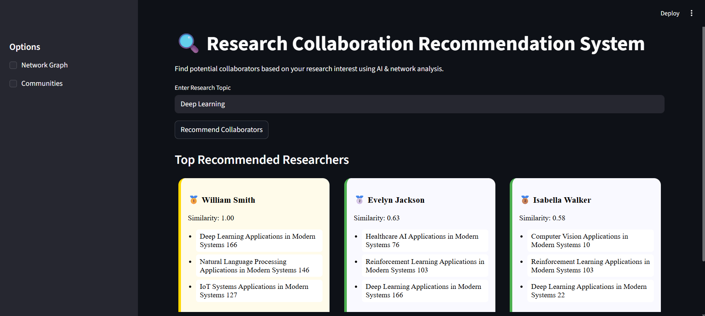

Coauthor Recommendation System
Technologies:
- Python
- Streamlit
- Machine Learning
- LLM
- Network Analysis
Duration: January 2026 - Present
- Developed a system to predict potential research collaborations using ML techniques.
- To Leveraged Large Language Models (LLMs)to analyze academic data such as authors and publications.
- Modeled collaboration networks using graph-based approaches to identify co-author relationships.
- Implemented data-driven algorithms to recommend suitable collaborators.
- Analyzed patterns in research data to improve prediction accuracy and insights.
- Designed a scalable framework for exploring and forecasting academic partnerships.
